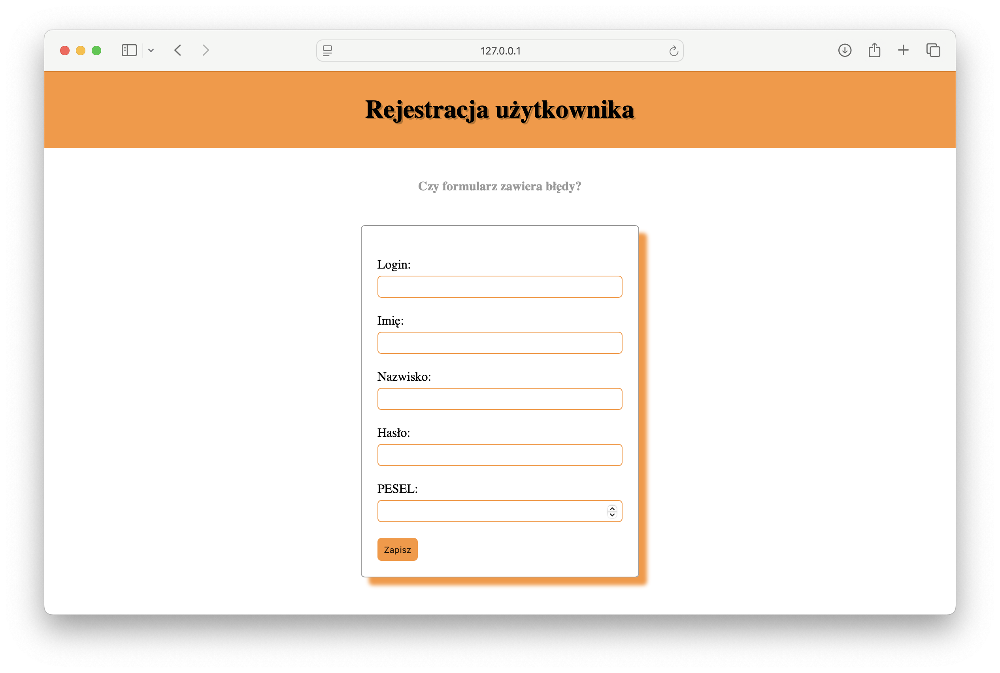

L#10: Testy manualne, testowanie formularzy.
Testy manualne to proces testowania oprogramowania, w którym tester ręcznie wykonuje testy, aby sprawdzić, czy aplikacja zachowuje się zgodnie z oczekiwaniami. W testach manualnych tester wykonuje konkretne kroki, aby zweryfikować funkcjonalność aplikacji, identyfikować błędy i oceniać ogólną jakość produktu.
Celem laboratorium jest zapoznanie się z procesem testowania formularzy i walidacji danych w praktyce.
Pobierz aplikację register.zip i dobrze przeanalizuj kod. Po uruchomieniu aplikacji formularz rejestracji będzie dostępny pod adresem http://localhost:5000/.
Widok aplikacji po uruchomieniu serwera.

Bardzo proszę przeanalizować kod i dokończyć (poprawić) walidację pozostałych (istniejących) pól formularza rejestracji użytkownika zgodnie z założeniami umieszczonymi w tabelce.
Implementacja walidacji = COMMIT (implementuj funkcjonalnośći etapami, pamiętaj o dobrym opisie commit'a).
| POLE FORMULARZA | WALIDACJA |
|---|---|
| LOGIN | Pole nie może być puste. Pole może zawierać dowolny ciąg składający się minimum z 4 znaków. |
| FIRST_NAME | Pole nie może być puste. Pole może zawierać dowolny ciąg. |
| LAST_NAME | Pole nie może być puste. Pole może zawierać dowolny ciąg. |
| PASSWORD | Pole nie może być puste. Pole powinno składać się z minimum 4 znaków. Hasło powinno składać się przynajmniej z: Cyfry, wielkiej litery, małej litery, znaku specjalnego (!@#$%^&*()_+-=). |
| PESEL | Pole nie może być puste. Weryfikacja numeru PESEL powinna zostać oparta o wyliczenie cyfry kontrolnej. |
Testowanie manualne formularzy to podstawowy i niezbędny element zapewniania jakości każdej aplikacji internetowej. Prawidłowa walidacja zabezpiecza aplikację przed wprowadzaniem niepoprawnych lub niebezpiecznych danych.
Strona główna